Ортодонтія · журнал «ДентАрт» 2019 №3
Лікування аномалії оклюзії класу II при вертикальному типі росту щелеп із застосуванням мікрогвинтів
TREATMENT OF HYPERDIVERGENT SKELETAL CLASS II MALOCCLUSION USING MICROSCREWS IMPLANTS
Михайло Соломонюк,стоматологічна клініка «Excelline» (м. Київ, Україна)
У статті проаналізовано клінічний випадок лікування пацієнтки у віці 24-х років з вертикальним типом росту, скелетним і дентальним класом ІІ. Сагітальна щілина між верхніми і нижніми різцями була 10 мм. Цефалометричний аналіз засвідчив: кут ANB – 7°, нижньощелепний кут FMA збільшений до 32°, Z-Аngle знижений до 63°. Установили незнімну апаратуру c пазом 0,022 дюйма. Для анкоражу вертикальної і горизонтальної площини на бічних ділянках на верхній і нижній щелепі були встановлені 2 мікрогвинти 1,5 мм завтовшки, 7 мм завдовжки. Їх застосування в комплексному лікуванні дало можливість нижній щелепі обертатися проти годинникової стрілки. Це зменшило кут ANB до 5°, FMA – до 30°, і Z-Аngle був збільшений до 70°. Поліпшилися положення підборіддя і лицьовий профіль, зменшилася сагітальна сходинка між різцями.
Лікування аномалії оклюзії класу II з вертикальним збільшенням висоти обличчя – предмет активного обговорення вже багато років.1 Поліпшення передньо-задньої позиції підборіддя і контроль вертикальної висоти – стратегічний фактор успішного лікування. З цією метою у дітей і підлітків у період активного росту щелепно-лицьової ділянки використовують високу головну тягу з функціональними апаратами. У деяких дослідженнях ішлося про ефективне застосування High Pull Head Gear (HPHG) з апаратом Гербста.2 Після завершення основного росту щелеп лікування провадять за допомогою незнімної техніки, у тяжких випадках рекомендоване поєднане ортохірургічне втручання.3
Однак єдиної концепції управління вертикальною відстанню для переднього зміщення нижньої щелепи дослідники не сформулювали. Одні автори стверджують, що вертикальна висота молярів повинна бути зменшена або строго фіксована,4 інші вважають, що екструзія молярів – не негативний фактор, а швидше необхідний. За рахунок цього механізму відбувається ротація оклюзійної площини проти годинникової стрілки, внаслідок чого нижня щелепа переміщується в переднє положення і відбувається корекція аномалії оклюзії.5
На прикладі лікування аномалії оклюзії класу II з вертикальним типом росту лицьового скелета пропонуємо розглянути способи її виправлення.
У клініку звернулася пацієнтка у віці 24 років зі скаргами на некрасиву усмішку, неправильне розташування зубів верхньої і нижньої щелепи (фото 1). При зовнішньому огляді обличчя симетричне, пропорційне, доліхоцефалічний тип. Профіль опуклий, губи в спокої зімкнуті, дихання змішане. Підборідна і носогубна складки середньої вираженості.
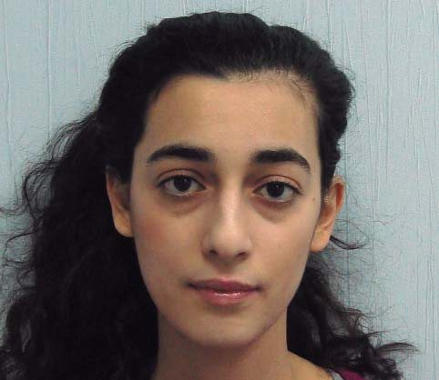
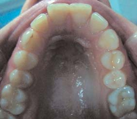
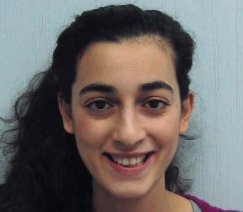
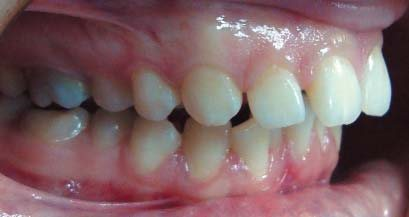
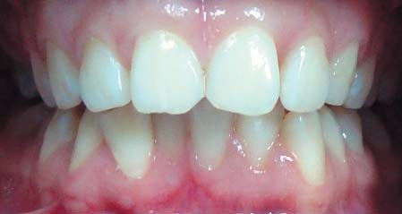
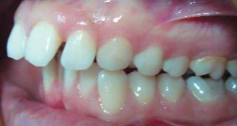
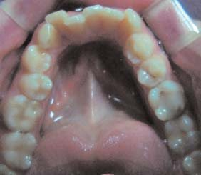
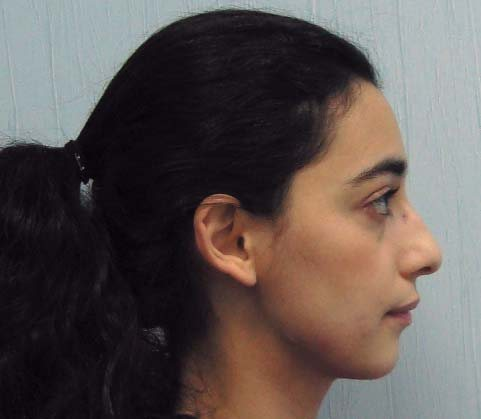
Інтраоральний огляд виявив співвідношення молярів та іклів за II класом Angle, звуження зубних рядів. Аналіз гіпсових моделей показав вільний простір на верхній зубній дузі 2 мм, на нижній зубній дузі дефіцит місця 5 мм, оклюзійна крива Шпеє 2 мм. Сагітальна відстань між верхніми і нижніми різцями близько 10 мм.
На ортопантомограмі резорбції і запальних явищ не виявлено (фото 2).
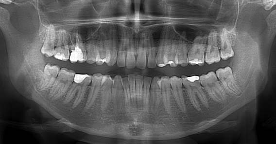
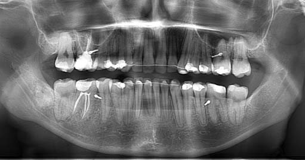
Розшифрування телерентгенограми (ТРГ) до лікування у бічній проекції показало скелетний клас II, кут ANB – 7° (утворений найглибшим краєм на верхній щелепі – точкою А, з’єднанням носо-лобного шва – точкою Nа і найглибшою виїмкою на нижній щелепі – точкою В), SNA – 81° (кут між краніальною площиною SN і точкою А на верхній щелепі), SNB – 74° (кут, утворений перетином площиною SN і точкою В на нижній щелепі) (фото 3). Нижньощелепний кут FMA був збільшений до 32° (кут, утворений нижньощелепною площиною – FH).
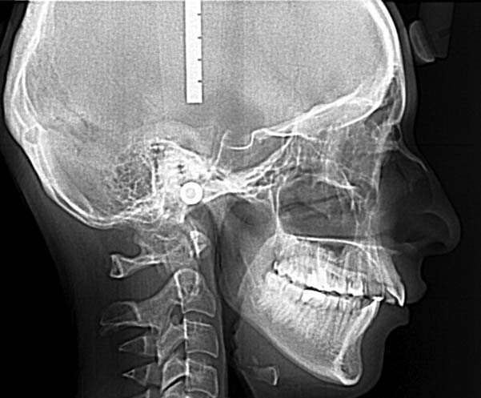
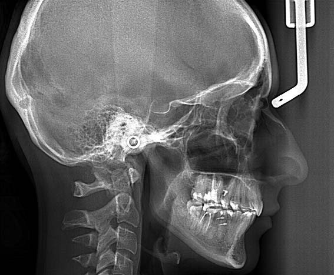
Нахил верхніх різців U1 до FH (кут, утворений віссю верхніх центральних різців U1 до FH) дорівнює 114°. IMPA був 87° (кут між віссю нижніх центральних різців і нижньощелепною площиною). Occ P до FH (кут між оклюзійною площиною і FH) – 12°. Відношення передньої лицьової висоти до задньої – індекс PFH/AFH – становив 0,7. Z-Аngle (перетин площини FH з лінією, що проходить через найбільш виступаючий край підборіддя і губи) був знижений до 63° (таблиця 1).
| Цефалометричні кути (°) | Середні значення | До лікування | Після лікування |
|---|---|---|---|
| SNA | 82 | 81 | 80 |
| SNB | 80 | 74 | 75 |
| ANB | 2 | 7 | 5 |
| FMA | 25 | 32 | 30 |
| PFH/AFH | 0,8 | 0,7 | 0,9 |
| FH к Occ P | 10 | 12 | 7 |
| Ui к FH | 114 | 114 | 98 |
| IMPA | 90 | 87 | 91 |
| Z-Аngle | 75 | 63 | 72 |
На підставі даних клінічних обстежень, антропометричного дослідження моделей щелеп, використання додаткових спеціальних методів дослідження: ТРГ у бічній проекції та ортопантомограми – було поставлено діагноз: вертикальний тип росту лицьового скелета, скелетний II клас, співвідношення молярів та іклів за II класом Angle, ускладнене звуженням зубних рядів II ступеня.
Лікувальні етапи, потрібні для корекції виявленої патології:
- Санація ротової порожнини.
- Вирівнювання зубних дуг на верхній і нижній щелепі.
- Нормалізація сагітального співвідношення між верхніми і нижніми центральними різцями.
- Встановлення співвідношення на іклах і молярах за I класом, досягнувши функціональної оклюзії.
- Поліпшення лицьового профілю.
Для вирішення цих завдань пацієнтці було запропоновано кілька варіантів лікування. Перший передбачав одночасне ортохірургічне лікування. Від запропонованого варіанту пацієнтка категорично відмовилася.
Другий альтернативний лікувальний план – екстракція ретенованих верхніх і нижніх зубів мудрості, дистальне переміщення верхніх зубів з опорою на мікрогвинти, інтрузія молярів і ротація нижньої щелепи вгору і вперед. Пацієнтка погодилася на цей лікувальний план.
Варіант видалення перших премолярів на верхньому зубному ряду і закриття сагітальної сходинки не розглядався.
Було встановлено незнімну апаратуру «пропис Рот» c пазом 0,022 дюйма і фіксованою первинною нікель-титановою (Ni-TI) дугою розміром 0,14 дюйма, потім 0,16 і 0,16-0,25 дюйма. Після вирівнювання зубних дуг встановлено сталеву дугу 0,19-0,25 дюйма на брекети верхнього і нижнього зубного ряду. Для створення абсолютної опори у міжкореневий простір між другими премолярами і першими молярами на верхній і нижній щелепі в діагональному напрямку встановлено 2 мікрогвинти товщиною 1,5 мм і довжиною 7 мм фірми «Dentos AbsoAnchor», Корея. Вони були встановлені на нижньому зубному ряду для утримання позиції нижніх різців від протрузії внаслідок носіння еластичних тяг по II класу. На верхній і нижній сталевій дузі напаяні гачки у фронтальній частині. Закриваючі нітінолові пружини були силою 200 мг кожна, еластичні тяги 3/16 heavy (фото 4).
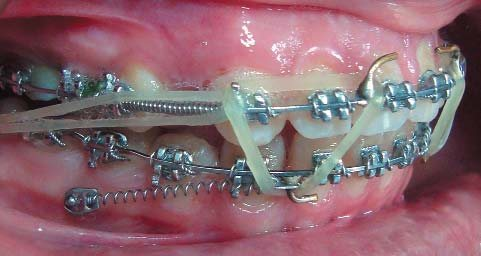
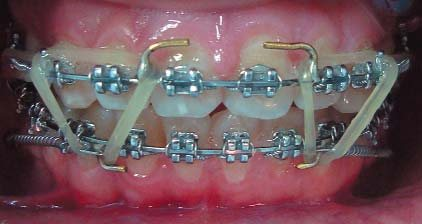
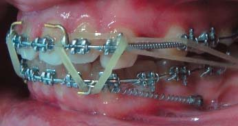
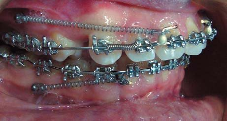
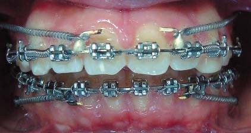
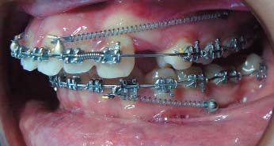
Результати лікування
Незнімну апаратуру зняли через 28 місяців від початку лікування. Аналіз фотографій обличчя виявив помітне поліпшення лицьового профілю. На інтраоральних світлинах зубні дуги вирівняні (фото 5).
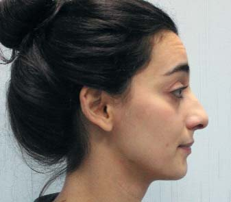
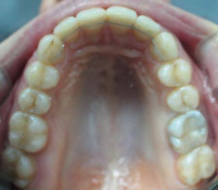

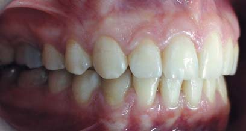
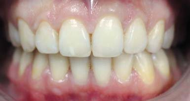
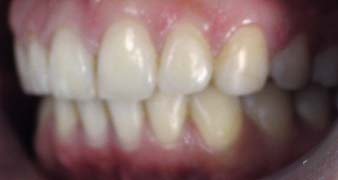
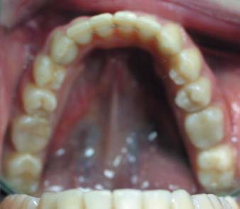
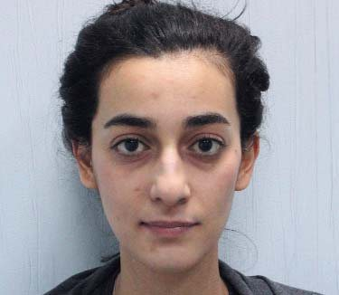
Аналіз моделей показав середні значення сагітального і вертикального співвідношення різців. Співвідношення між зубними рядами було за I класом, збіг середніх ліній. Діагностика в артикуляторі у стані спокою показала щільний міжгорбиковий контакт між зубними рядами, відсутність передчасних торкань при бічних рухах нижньої щелепи, фронтальну напрямну та іклове ведення по обидва боки.
Цефалометричний аналіз виявив зменшення кута FMA до 30°, незначне підвищення кута SNB – до 75°, зниження АNB до 5°. Occ P до FH становила 7°.
При накладенні цефалометричних обрисовок до і після лікування відзначається ротація нижньої щелепи проти годинникової стрілки і її рух уперед (фото 6).
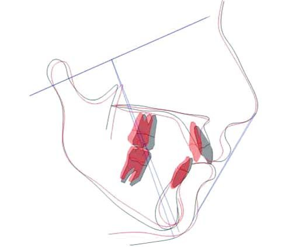
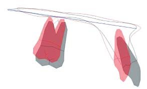
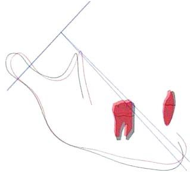
На ортопантомограмі корені зубів паралельні, відсутня їх резорбція. Мікрогвинти забезпечували повноцінний анкораж, симптомів їх рухливості або втрати у процесі лікування не спостерігалося.
Через 1 рік ретенції при клінічному огляді був відсутній рецидив, спостерігалася стабільність раніше отриманих результатів. Співвідношення по іклах і молярах було I класу (рис. 7). Відсутність скупченості зубів у фронтальній ділянці на верхньому і нижньому зубному ряду. Зубні дуги мають правильну форму, в нормі сагітальне і вертикальне співвідношення різців. Відсутність симптомів дисфункції з боку скронево-нижньощелепного суглоба.
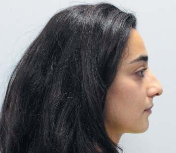
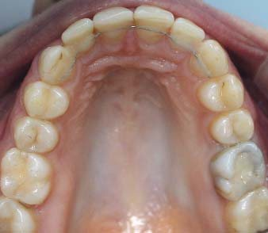
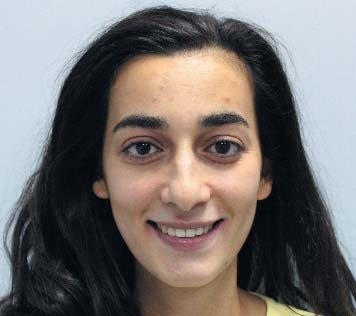
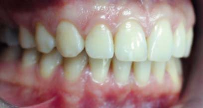
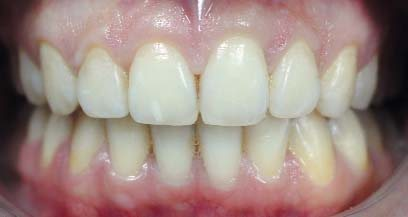
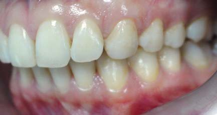
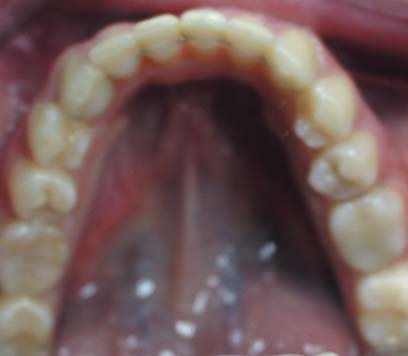
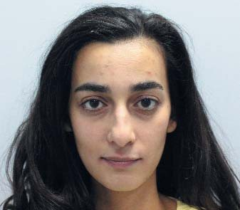
Аналіз і обговорення
Лікування аномалії оклюзії класу II з вертикальним збільшенням нижньої третини обличчя становить певні труднощі, зважаючи на складність корекції скелетних невідповідностей у двох площинах.
Причинами вертикального росту може бути спадкова схильність, ротовий тип дихання, відсутність жувального навантаження, внаслідок чого ріст обох щелеп відбувається переважно у вертикальному напрямку.
Клінічно спостерігається опуклий профіль за рахунок ретрузивного положення нижньої щелепи, зменшення виступання підборіддя, збільшення нижньої третини висоти обличчя, оголення ясенного краю при усмішці. Досить часто визначається гіпотонус жувальних м’язів. Оклюзійна структура характеризується співвідношенням молярів та іклів за II класом, значним прорізуванням молярів та екструзією верхніх різців.
Цефалометрично спостерігається скелетний клас II, в основному зумовлений дистальним положенням нижньої щелепи. Ротація вертикальних площин, протрузія нижніх різців, збільшення передньої висоти лиця щодо задньої.
Основні завдання лікування: переднє переміщення нижньої щелепи, зменшення лицьової висоти, поліпшення профілю, змикання зубних рядів за класом I.
Традиційне лікування таких пацієнтів – це використання HPHG і HPJH, сегментарних дуг, мікрогвинтів. Незважаючи на великий вибір способів вертикального контролю, завжди було складно домогтися дислокації нижньої щелепи проти годинникової стрілки. Було виявлено, що її розташування тісно пов’язане зі зміною оклюзійної площини, особливо в період росту.6 Клінічно продемонстровано, що методи, спрямовані на горизонталізацію оклюзійної площини, сприяють функціональному зміщенню та адаптації нижньої щелепи у передньому положенні.7 Отже, зміною оклюзійної траєкторії можна впливати на скелетну структуру аномалії оклюзії. Крім того, Fushima і співавт. у 1996 р. виявили, що у пацієнтів з вертикальним ростом і класом II збільшення нахилу оклюзійної площини поєднувалося з екструзією верхніх молярів. Вони відзначили, що інтрузія жувальних зубів знижувала нижньощелеповий кут, відтак кут SNB збільшувався навіть у дорослих пацієнтів.8
Отже, інтрузія молярів сприяє пересуванню нижньої щелепи проти годинникової стрілки, поліпшує позицію підборіддя наперед, знижує лицьову висоту, зменшує сагітальну відстань між різцями. Зміни у вертикальній позиції у свою чергу змінюють сагітальне співвідношення між щелепами. Відтак змикання зубних рядів у II класі після лікування може перейти в I клас співвідношення після інтрузії молярів навіть у пацієнтів, що не ростуть.
Ретроспективні дослідження підтвердили ауторотацію нижньої щелепи після інтрузії молярів. Інтрузія на 1 мм зменшувала висоту лиця на 1,7 мм, знижувала нижньощелеповий кут на 2°, підборіддя зміщувалося вперед близько 2,3 мм.9 Однак цей спосіб корекції класу II ефективний у пацієнтів з незначною ротацією оклюзійної площини, вираженим позитивним торком центральних різців, тобто коли є потрібний простір між верхніми і нижніми різцями для передньої ротації нижньої щелепи після інтрузії молярів.
У випадках, коли нижня щелепа заблокована верхньою, спостерігається низький позитивний торк верхніх центральних різців. Первинно слід збільшити їх вестибулярний нахил. Для цієї мети найефективнішим буде використання позаротової тяги HPJH не менше 12-14 годин. Гарні результати дає застосування мікрогвинтів та ютіліті дуг. У деяких випадках після їх застосування ситуація може не поліпшуватися, оскільки потрібне, крім інтрузії, утримання верхньої щелепи від ротації вниз під дією сили еластичних тяг за II класом.
Інші автори, навпаки, пропонують екструзування верхніх молярів та інтрузію нижніх для переднього зміщення нижньої щелепи. Зміна оклюзійної площини, вважають вони, відповідає феномену балансованої гойдалки.10 Первинно шляхом згинання петель екструзуються премоляри, формується вертикальний тиск на них. Завдяки цьому усуваються оклюзійні перешкоди в зоні бокових зубів, нижня щелепа і суглобові головки встановлюються у правильне положення. Поетапно за допомогою вигинів верхні моляри екструзуються на тлі інтрузії нижніх. Під дією еластичних тяг за класом II, які фіксуються до Meaw петель, одночасно з ротацією оклюзійної площини відбувається функціональне зміщення нижньої щелепи вперед. Оклюзійна структура адаптується до нового положення нижньої щелепи через нейром’язову систему.12 Досягнення стабільної статичної і динамічної оклюзії створює менше навантаження на скронево-нижньощелепний суглоб (СНЩС).
Однак використання багатопетлевої механіки у пацієнтів з вертикальним типом росту пов’язане з певними труднощами. Головним недоліком є відсутність стабільного скелетного або позаротового анкоражу для підтримання верхньої щелепи і палатальної площини від ротації в ході носіння еластиків. У результаті тривалого використання еластичних тяг практично на всіх етапах лікування, крім процесу вирівнювання, може не спостерігатися зменшення вертикального розміру, а навпаки, невелике збільшення задньої і передньої висоти обличчя. Завдяки ротації оклюзійної площини з’являється передній зсув нижньої щелепи і адаптація її до цього положення.
Ортодонтичне лікування технікою спрямованої сили, запропонованою Tweed-Merrifield, до недавнього часу було основним методом лікування таких пацієнтів. У ній чітко прописані діагностичні етапи, індекс складності та поетапний протокол лікування, включаючи ретенційний період.12 Ротація або відповідь нижньої щелепи відбувається за рахунок кількох факторів: механіка закриття екстракційних просторів поєднується із застосуванням позаротової тяги HPJH, еластичних тяг за II класом. Це не збільшує вертикальну висоту обличчя, а навпаки, сприяє її зменшенню. Створює ліпшу ротацію проти годинникової стрілки нижньощелепної та оклюзійної площин, зміщує нижню щелепу вперед, тим самим збільшуючи кут SNB і знижуючи ANB. Видалення премолярів дає можливість усунути скупченість, зменшити сагітальну щілину між різцями.
Вплив екстракційних або безекстракційних методів лікування на висоту нижньої третини обличчя залежить від багатьох факторів: висоти позиціонування брекетів (чим вище до краю ясен, тим ефект екструзії зубів більший), тривалості носіння еластиків і вектора їх кріплення між верхніми і нижніми зубними рядами. Фіксація за II класом від верхніх гачків за латеральними різцями до останніх молярів створює найменший вертикальний вектор. Отже, висота обличчя збільшуватиметься незначно. Чим ближче у напрямку до нижніх центральних зубів вони будуть фіксуватися, вертикальний розмір також підвищуватиметься, навіть незважаючи на мезіалізацію молярів після видалення. Комбінація незнімної техніки з HPJH або мікрогвинтами сприяє зменшенню вертикальної відстані при лікуванні обома методами.
З введенням у практику мікрогвинтів з’явилися ширші можливості для безекстракційного лікування. Їх встановлення не вимагає спеціального обладнання, механіка лікування обмежує потребу в додаткових вигинах на дузі. Ми спробували комбінувати переваги механіки лікування кожного з перерахованих способів.
У нашому клінічному випадку класичну механіку ковзання техніки прямої дуги поєднували з використанням мікрогвинтів. Для вертикальної і горизонтальної опори вони були встановлені в бічних відділах вестибулярно. Збільшення позитивної інклинації верхніх різців домагалися високим вектором тяги закриваючих пружин від мікрогвинтів до низько припаяних гачків на дузі. За такого типу ретракції спрацьовує позитивний торк коронки і кореня різців з незначною інтрузією. Закриття сагітальної щілини ми спробували частково досягти за допомогою дистального переміщення верхнього зубного ряду. Збільшення передньої висоти лиця в результаті ефекту розклинювання після дисталізації ми усунули максимальною інтрузією верхніх молярів. У комбінації з еластиками по II класу і згори – вниз у фронтальній ділянці отримали відповідь нижньої щелепи. Ми намагалися відійти від традиційних схем лікування – видалення перших премолярів – з огляду на те, що за такого підходу потрібна ретракція різців для закриття екстракційних просторів. Це зробило б ще плоскішим профіль з кінчиком носа, який значно виступав до лікування.
Таким чином, за рахунок переднього вертикального контролю, позитивної інклинації верхніх різців, інтрузії молярів верхньої і нижньої щелепи носіння еластиків по II класу і згори вниз спереду дало можливість нижній щелепі обертатися проти годинникової стрілки, зменшити сагітальну сходинку між різцями, поліпшити положення підборіддя і лицьовий профіль.
Висновки
- У дітей і підлітків з вертикальним типом росту і класом II використовують високу головну тягу з функціональними апаратами.
- Після завершення росту щелепно-лицьової ділянки потрібне використання незнімної техніки зі скелетною опорою.
- Інтрузія молярів верхньої щелепи сприяє пересуванню нижньої щелепи проти годинникової стрілки, поліпшує позицію підборіддя наперед, знижує лицьову висоту.
Література
- Cope JB, Sachdeva RC. Nonsurgical correction of a Class II malocclusion with a vertical growth tendency // Am J Orthod Dentofacial Orthop. – 1999. – Vol. 116. – P. 66-74.
- Ruf S, Pancherz H. The effect of Herbst appliance treatment on the mandibular plane angle: a cephalometric roentgenographic study // Am J Orthod Dentofacial Orthop. – 1996. – Vol. 110. – P. 225-229.
- Nattestad A, Vedtofte P. Mandibular autorotation in orthogathic surgery: a new method of locating the centre of mandibular rotation and determining its consequence in orthognathic surgery // J Craniomaxillofac Surg. – 1992. – Vol. 20. – P. 163-170.
- Lamarque S. The importance of occlusal plane control during orthodontic mechanotherapy // Am J Orthod Dentofacial Orthop. – 1995. – Vol. 107. – P. 548-558.
- Tanaka EM, Sato S. Longitudinal alteration of the occlusal plane and development of different dentoskeletal frames during growth // Am J Orthod Dentofacial Orthop. – 2008. – Vol. 134. – P. 602 e1-e11. – discussion P. 602-603.
- Ye R, Li Y, Li X, et al. Occlusal plane canting reduction accompanies mandibular counterclockwise rotation in camouflaging treatment of hyperdivergent skeletal Class II malocclusion // Angle Orthod. – 2013. – Vol. 83. – P. 758-765.
- Eliana MT, Sadao S. Longitudinal alteration of the occlusal plane and development of different dentoskeletal frames during growth // Am J Orthod Dentofacial Orthop. – 2008. – Vol. 134. – P. 602.e1-602.e11.
- Fushima K, Kitamura Y, Mita H, Sato S, Suzuki Y, Kim YH. Significance of the cant of the posterior occlusal plane in Class II Division 1 malocclusions // Eur J Orthod. – 1996. – Vol. 18. – P. 27-40.
- Kyunam Kim, Kwangchul Choy at all. Prediction of mandibular movement and its center of rotation for nonsurgical correction of anterior open bite via maxillary molar intrusion // Angle Orthod. – 2018. – Vol. 88. – P. 538-544.
- Kim JI, Hiyama T, Akimoto S, Shinji H, Tanaka EM, Sato S. Longitudinal study regarding relationship among vertical dimension of occlusion, cant of occlusal plane and anteroposterior occlusal relation // Bull Kanagawa Dent Coll. – 2006. – Vol. 34. – P. 130-2.
- Fushima K, Kitamura Y, Mita H, Sato S, Sukuki Y, Kim YH. Significance of the cant of the posterior occlusal plane in Class II Division 1 malocclusions // Eur J Orthod. – 1996. – Vol. 18. P. 27-40.
- Merrifield LL, Gebeck TR. Analysis: concepts and values // Part II. J Charles Tweed Found. – 1989. – Vol. 17. – P. 49-64.